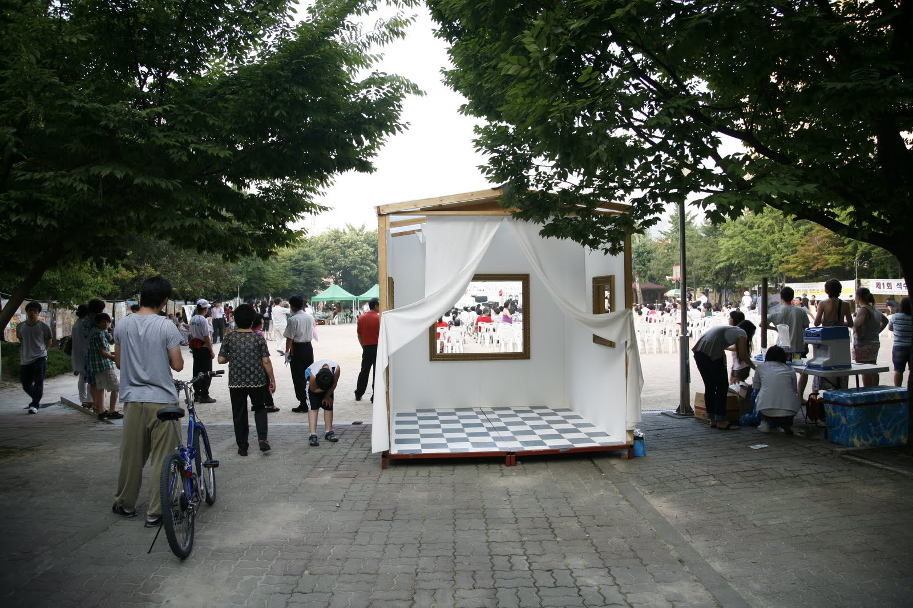

Moving Museum
The ‘Moving Museum’, debuting at SAP 2009, is meant to be different from any other art museum. It is made for communication, breaking historical stereotypes of art museums and art works. The first stereotype is the location for the museum and the second refers to the idea that art works in museums display and eternally preserve the past. The third is related to the historicity of the museum. The ‘Moving Museum’ will break these stereotypes and suggest new ways of seeing.
The ‘Moving Museum’ will continually move, meeting new people or things, and then exhibit them. Everyday things will be seen differently through the frames of the ‘Moving Museum’, allowing daily life to be experienced visually in another way. In the ‘Moving Museum’, there are no boundaries between the real and represented, as the art work and the real become one. The empty frames are the open windows looking from the outside in and from the inside out. Therefore, the frames make it possible to communicate without any boundaries. I want people to think about the many different boundaries we have in our daily life, here in the Seoksu Market, a traditional type of market that will soon be terminated.
움직이는 미술관
이번 2009 석수아트프로젝트를 통해 소개되는 '움직이는 미술관 Moving museum' 설치작업은 미술관이라는 공간과 작품에 관한 역사적 고정관념의 틀을 벗어나 실험적인 소통가능의 공간을 만들어보고자 하는 의도에서 기획되었다. 그 고정관념의 첫째는 뮤지움의 장소성, 둘째는 뮤지움에 걸려있는 작품의 과거적이고 영구적인 전시와 보존, 셋째는 뮤지움의 거대역사성으로, 본 설치작업은 이에 대한 적당한 거부감과 틀을 깨고 새로운 대안을 제시하기 위한 하나의 행위이다.
‘움직이는 미술관 Moving museum’은 지속적으로 이동하며 새로운 대상과 만나고 또 그 대상을 보여준다. 그 대상은 일상의 시공간에서 접할 수 있는 대상이지만 ‘움직이는 미술관’ 안의 프레임 속에서 일상이 일상 이상의 시각적 효과로 체험 가능하게 되고, ‘움직이는 미술관’은 실재와 재현의 경계가 사라지고 작품과 실재가 하나가 되기도 하는 공간이다. 다시 말해 ‘움직이는 미술관’ 안에 놓인 빈 액자는 밖에서는 안으로 열린 창이고, 동시에 안에서는 밖으로 열린 창이다. 빈 액자는 경계가 허물어진 소통 가능한 창(窓)의 역할을 하고, 이 창을 통해 다양한 경계의 틀을 생각해 보았으면 한다. 바로 이곳 석수시장, 재래식 시장이자 곧 사라질 위기에 처한 장소에서…… -
seoksuartproject.blogspot.com 에서 옮김
RESUME
소개
1972년 진주 생(生)
현재 안산시에 거주하며 활동, 현재 서울예술대학 강사.
2005 - 2007년 Ecole nationale superieure d’Art de Dijon. 예술과 수학. 프랑스
2004년 2월 중앙대학교 사진학과 졸업
1999 - 2001년 school of visual art 사진학과 수학. 미국
개인전
2009 3월 ‘복제의 재구성 Ⅱ’ KT갤러리. 서울
2008 11월 ‘복제의 재구성’ 옆집갤러리. 서울
2008 10월 ‘le buste’ 스페이스바바. 서울
2008 4월 ‘miroir-memoire’ 파리한국문화원. 파리
2007 4월 ‘작은 풍경’ lib l’U. 디종. 프랑스
그룹전
2009 6월 ‘잃어버린 시간들’ 스톤앤워터. 안양
2009 4월 ‘JUST ART’ 성곡미술관. 서울
2009 3월 ‘feeling tree’ 서정욱갤러리. 서울
2008 12월 ‘stimulatives’ 키미아트갤러리. 서울
2008 9월 ‘serendipities’ 그라우갤러리. 서울
2008 8월 ‘지각과 충동’ 관훈갤러리. 서울
2003 6월 ‘A.L’전 총신대 도서관. 서울
2002 2월 ‘Young Portfolio’ 키요사또 사진 박물관. 일본
소장
2002 키요사또 사진 박물관 2점
2009-08-03
sap2009.egloos.com 에서 옮김